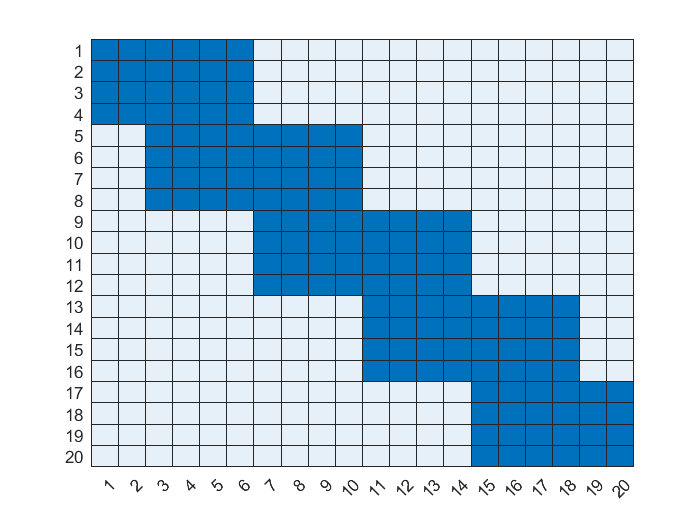

Josiah Murray
Numerical inversion of the Laplace transform with application to modelling railway transition zones
Supervisors:
Dr Ravi Pethiyagoda, Professor Mike Meylan,
Professor Natalie Thamwattana


- Figure from: Indraratna, B., Qi, Y., Malisetty, R. S., Navaratnarajah, S. K., Mehmood, F., & Tawk, M. (2022). Recycled materials in railroad substructure: an energy perspective. Railway Engineering Science, 30(3), 304–322. https://doi.org/10.1007/s40534-021-00267-6
- Based on a figure from: Indraratna, B., Babar Sajjad, M., Ngo, T., Gomes Correia, A., & Kelly, R. (2019). Improved performance of ballasted tracks at transition zones: A review of experimental and modelling approaches. Transportation Geotechnics, 21, 100260. https://doi.org/10.1016/j.trgeo.2019.100260
\[ EI \partial_x^4 y +m\partial_t^2 y + C(x)\partial_t y + k(x)y = P\delta(x-vt) \]

\[ EI \partial_x^4 y +m\partial_t^2 y + C(x)\partial_t y + k(x)y = P\delta(x-vt) \]
Graph of $k$ from experiments and one of the idealised form we're going to take.
Laplace$\to$Undetermined coefficients$\to$inv. Laplace
\[ EI \partial_x^4 y +m\partial_t^2 y + C(x)\partial_t y + k(x)y = P\delta(x-vt) \]
Apply the Laplace transform, $\hat y = \int_0^\infty y e^{-st} dt$:
$\downarrow$
\[EI \partial x^4 \hat y + [ms^2 + C(x)s + k(x)]\hat y = \begin{cases} P \delta(x) \quad v=0,\\ \frac{P}{|v|}e^{-sx/v}\quad v\ne 0.\end{cases} \]System with no transition zones:
System with 4 splits in beam:
\[\begin{align*}
\begin{aligned}
-c_1 + c_2 + c_3 -c_4 = 0,\\
-r_1c_1 + r_2 c_2 + r_3 c_3 - r_4 c_4 = 0,\\
-r_1^2 c_1 + r_2^2 c_2 + r_3^2 c_3 - r_4^2 c_4 = 0,\\
-r_1^3 c_1 + r_2^3 c_2 + r_3^3 c_3 - r_4^3 c_4 = \frac{P}{EIs}.\\
\end{aligned}
\end{align*}\]


Weeks' Method
\[ f(t) = e^{\sigma t} \sum_{k=0}^\infty a_k e^{-bt/2}L_k(bt), \]
- Based on a figure from: Indraratna, B., Babar Sajjad, M., Ngo, T., Gomes Correia, A., & Kelly, R. (2019). Improved performance of ballasted tracks at transition zones: A review of experimental and modelling approaches. Transportation Geotechnics, 21, 100260. https://doi.org/10.1016/j.trgeo.2019.100260

This research was supported by the Australian Government through the ARC’s Discovery Projects funding scheme (project DP22010286). The views expressed herein are those of the authors and are not necessarily those of the Australian Government or the ARC.